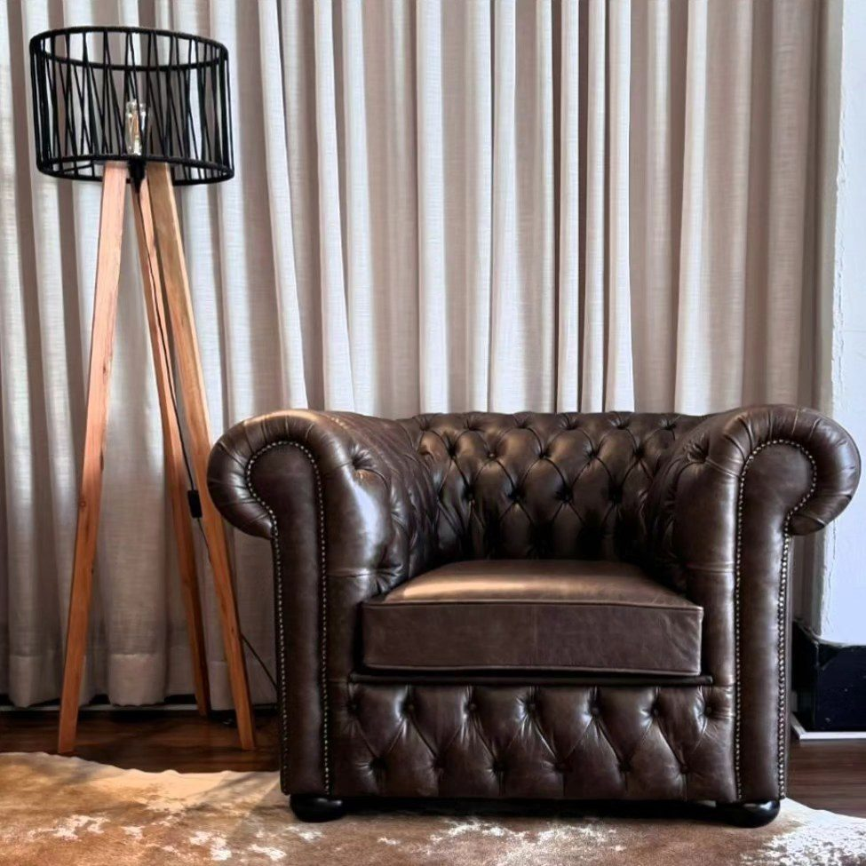

Serviço
Restauração de poltrona antiga
Restauração artesanal que respeita a história da peça — estrutura, enchimento e revestimento em diálogo com o original.
A restauração de poltrona antiga na InovArt trata a peça como patrimônio doméstico: recuperamos estrutura, enchimento e revestimento sem apagar a identidade clássica — Chesterfield, wingback, medalhão e outras tipologias.
Usamos técnicas tradicionais de tapeçaria combinadas a materiais atuais de alta qualidade, para que a poltrona volte a ser usada com conforto e presença no ambiente.
Para quem é
Famílias que herdaram peças, colecionadores, projetos de interiores que pedem autenticidade, e quem prefere restaurar a comprar réplica. Também atendemos arquitetos que especifica peças clássicas em obras de alto padrão.
Como funciona
- Leitura da peça — madeira, ferragens, enchimento original e estilo.
- Plano de restauração — o que preservar, reforçar e renovar.
- Execução — estrutura, tapeçaria e acabamento no ateliê.
- Entrega — peça estável, confortável e fiel ao caráter original.
Perguntas frequentes
Vocês mantêm o visual clássico da poltrona?
Sim. Orientamos tecidos e acabamentos que dialogam com o período e o desenho da peça, sem forçar tendências que a descaracterizem.
Dá para reforçar a estrutura de madeira?
Sim, quando necessário. Avaliamos estabilidade e fazemos reforços compatíveis com o uso atual.
Restauram só poltronas ou também sofás antigos?
Restauramos poltronas, sofás e outras peças clássicas. Cada projeto tem escopo próprio após avaliação.
Como iniciar a restauração?
Envie fotos de vários ângulos pelo WhatsApp. Agendamos avaliação e proposta com prazo.
Conte o desafio do seu projeto — do conserto pontual à peça sob encomenda. Envie fotos e receba orientação pelo WhatsApp.
Pedir orçamento no WhatsApp